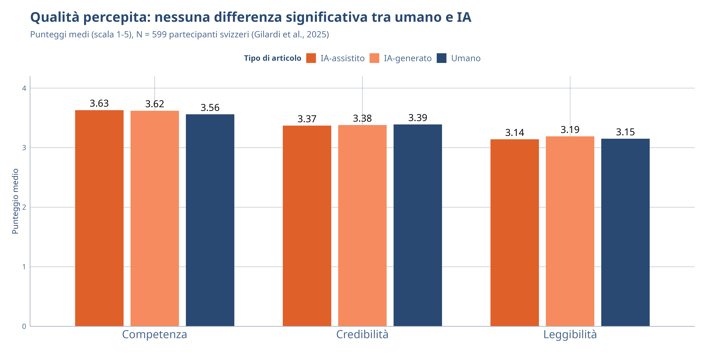

Produzione di Contenuti con GenAI
IA Generativa e Media — Settimana 2
DISCUI · Università degli Studi di Urbino Carlo Bo
2 marzo 2026
Roadmap della lezione
- I flussi di lavoro con GenAI — come cambiano i processi creativi
- Prompt engineering avanzato — struttura, ruolo, formato
- L’IA nella catena del valore giornalistica — dalla raccolta alla distribuzione
- Qualità percepita vs. disponibilità a leggere — il paradosso dell’accettazione
- Criteri di valutazione — come giudicare i contenuti generati dall’IA
- Prossimi passi — deepfake e regolamentazione
I Flussi di Lavoro con GenAI
Dal foglio bianco alla collaborazione con l’IA
Flusso tradizionale
- Ricerca delle fonti
- Organizzazione dei materiali
- Scrittura della bozza
- Revisione e pubblicazione
Flusso con GenAI
- IA-assistita: ricerca e aggregazione
- Ibrido: scrittura con suggerimenti IA
- Umano: revisione critica e fact-checking
- IA-assistita: ottimizzazione e distribuzione
L’IA non elimina fasi del processo ma le trasforma. La fase critica resta quella umana: revisione, verifica, giudizio editoriale.
L’adozione dell’IA nelle redazioni
L’IA generativa sta entrando in tutte le fasi della produzione giornalistica (Mattis & Vreese, 2025):
| Fase | Esempi concreti | Rischi |
|---|---|---|
| Raccolta | Bloomberg: tool per sintetizzare documenti | Amplificazione propaganda |
| Produzione | Express.de: 5% articoli automatizzati | Errori e hallucination |
| Verifica | Reuters: monitoraggio automatico fonti | Black-box dei modelli |
| Distribuzione | Personalizzazione e chatbot informativi | Frammentazione pubblico |
I giornalisti di fronte all’IA
Speranze
- Maggiore efficienza nei compiti di routine
- Più tempo per il giornalismo di qualità
- Nuove forme di storytelling
- Accessibilità e personalizzazione
Timori
- Perdita di posti di lavoro
- Erosione delle norme professionali
- Dipendenza dalle piattaforme tech
- Proliferazione di informazione di bassa qualità
I giornalisti adottano un approccio prevalentemente pragmatico: l’IA come “collega” per compiti di routine, mai per il giudizio giornalistico di base (Munoriyarwa & de-Lima-Santos, 2025).
Il “pink slime journalism”
Pink slime journalism: siti di notizie generati automaticamente dall’IA, spesso creati per profitto o per scopi ideologici, che riempiono i “deserti informativi” locali con contenuti di bassa qualità (Mattis & Vreese, 2025).
- Brand apparentemente locali e legittimi
- Contenuti generati senza supervisione editoriale
- Competono economicamente con testate già in crisi
- Possono veicolare disinformazione su scala industriale
Attenzione
Il fenomeno del pink slime è direttamente collegato al progetto del corso: le immagini AI slop sui social media sono l’equivalente visivo di questo fenomeno testuale.
Prompt Engineering Avanzato
Anatomia di un prompt efficace
| Componente | Descrizione |
|---|---|
| Ruolo | Chi deve essere l’IA |
| Contesto | Informazioni di sfondo |
| Compito | Cosa deve fare |
| Formato | Come deve essere l’output |
| Vincoli | Limiti e requisiti |
| Esempi | Output desiderato |
Prompt che li usa tutti
“Agisci come un analista media. Nel contesto del sistema mediale italiano, analizza i seguenti 5 articoli. Presenta i risultati in una tabella, max 200 parole, tono accademico.”
Struttura basata sul principio “Dirigi” di Cosenza (2025).
Tecniche di prompting
Zero-shot
“Classifica questo testo come positivo, negativo o neutro.”
L’IA usa solo le sue conoscenze generali.
Few-shot
“Ecco 3 esempi di classificazione: [esempi]. Ora classifica questo testo.”
L’IA impara dal pattern degli esempi.
Chain-of-thought
“Analizza questo articolo passo dopo passo: prima identifica il tema, poi il tono, infine classifica.”
L’IA esplicita il ragionamento.
Role-play
“Sei un fact-checker esperto. Verifica le affermazioni in questo testo.”
L’IA assume una prospettiva specifica.
La Percezione dei Contenuti IA
Il disaccoppiamento qualità-accettazione
Il paradosso della disponibilità a leggere
| Tipo di contenuto | Disponibilità a leggere |
|---|---|
| Senza IA | 84% |
| IA-assistito | 55% |
| Interamente IA | 29% |
La qualità percepita è equivalente, ma la disponibilità crolla. La resistenza non dipende dalla qualità, ma da preoccupazioni legate a fiducia e autenticità (Gilardi et al., 2025).
Da discutere
Sapendo che un articolo è stato scritto dall’IA, lo leggereste?
L’effetto della disclosure
Effetto a breve termine
Dopo aver saputo che l’articolo era generato dall’IA, i partecipanti mostravano una maggiore disponibilità a continuare a leggere.
Possibile “effetto novità” o curiosità.
Effetto a lungo termine
Questo non si traduceva in una maggiore disponibilità a leggere notizie IA in futuro.
Lo scetticismo di fondo resta invariato.
“Public aversion to AI-generated news may not be a matter of perceived content quality but rather a broader issue of trust and perception.”
— Gilardi et al. (2025)
Criteri di Valutazione dei Contenuti IA
Un framework di valutazione
| Criterio | Domanda guida | Metodo di verifica |
|---|---|---|
| Accuratezza | I fatti sono corretti? | Cross-check con fonti primarie |
| Completezza | Mancano prospettive rilevanti? | Confronto con esperti del settore |
| Coerenza | Il testo è logicamente consistente? | Analisi argomentativa |
| Originalità | Va oltre la “media di internet”? | Confronto con output standard |
| Trasparenza | È dichiarata la generazione IA? | Verifica delle disclosure |
| Bias | Perpetua stereotipi o pregiudizi? | Analisi critica del contenuto |
L’accuratezza come sfida centrale
Il problema delle hallucination
I LLM possono generare informazioni plausibili ma false: citazioni inesistenti, dati inventati, fatti alterati. Il 50% delle risposte LLM sui contenuti BBC presentava problemi, con il 19% di errori fattuali diretti (BBC, 2025, citato in Mattis & Vreese, 2025).
Strategie di verifica:
- Triangolazione: verificare con almeno 2 fonti indipendenti
- Fonte primaria: risalire sempre al dato originale
- Dominio specifico: attenzione ai settori dove l’IA ha meno dati
- Attualità: le conoscenze del modello hanno una data limite
Verso la produzione responsabile
Il modello collaborativo
L’IA supporta il giornalista ma non lo sostituisce (Mattis & Vreese, 2025):
- Bozze e suggerimenti dall’IA
- Verifica e giudizio dall’umano
- Supervisione editoriale umana
- Disclosure trasparente
La sfida istituzionale
Le redazioni devono (Munoriyarwa & de-Lima-Santos, 2025):
- Definire policy interne sull’uso IA
- Formare i giornalisti sulla AI literacy
- Bilanciare efficienza e qualità
- Mantenere indipendenza dalle big tech
Sintesi e Prossimi Passi
Concetti chiave di oggi
- L’IA trasforma tutti i flussi di produzione contenuti, ma la revisione umana resta centrale
- Il prompt engineering strutturato migliora drasticamente la qualità dell’output
- La qualità percepita dei contenuti IA è equivalente a quella umana (Gilardi et al., 2025)
- Ma la disponibilità a leggere resta bassa (29%) — il problema è la fiducia
- Il pink slime journalism è la faccia oscura della produzione automatizzata (Mattis & Vreese, 2025)
- La valutazione critica richiede triangolazione, fonti primarie, attenzione al bias
Letture per questa settimana
Assegnate in settimana 1
Suggerimento
Domani: guest lecture di Vincenzo Cosenza sull’intelligenza aumentata. Portate domande pratiche sull’uso professionale dell’IA.
Per la prossima lezione
Domani (Martedì 3 Marzo): Guest — Vincenzo Cosenza, “Intelligenza Aumentata”
- Dalle regole agli esercizi pratici
- Uso sistematico dell’IA nel lavoro professionale
Mercoledì 4 Marzo: Deepfake, Policy e Regolamentazione
- Tecnologie deepfake e impatto sulla fiducia
- EU AI Act e Code of Practice on Disinformation
- Policy delle piattaforme (Meta, TikTok)
Grazie!
Prossima lezione: Guest — Vincenzo Cosenza (3 Marzo 2026)
📧 fabio.giglietto@uniurb.it
🌐 blended.uniurb.it
Riferimenti

IA Generativa e Media · A.A. 2025/2026